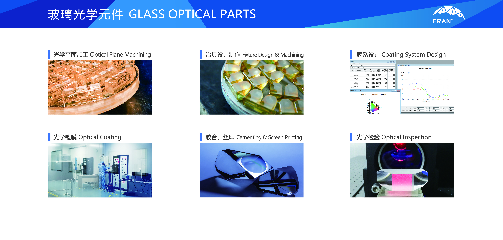

Established optical component development and core manufacturing process baseline.

About Fran Optics
Engineering-Focused Optical Manufacturing Partner
Fran Optics is built around precision optical component development and production, with an emphasis on quality stability, process control and long-term customer collaboration.
Positioning
A practical manufacturing partner for global teams that need custom optics with predictable quality outcomes.
Who We Are
Company profile built for B2B optical programs
Our company model combines engineering collaboration, process-oriented manufacturing and quality discipline. This structure supports customer programs from concept validation to volume delivery.
- Focused on precision optical components and assemblies
- Cross-functional coordination between engineering and production
- Documentation and communication optimized for OEM workflows
- Delivery approach aligned with prototype, pilot and mass phases

Milestones
Growth through capability depth and project execution
Expanded process coverage across precision machining, coating and structured inspection workflows.
Built stronger DFM collaboration model for complex customer programs and application-specific requirements.
Improved bilingual project communication and export-facing delivery readiness.

People & Culture
Execution culture centered on accountability, responsiveness and practical problem-solving.
Facility Base
Manufacturing footprint designed for precision process control and stable project transitions.

Technical Focus
Process depth across optical machining, coating, assembly and final quality assurance.

Operating Principles
How we work with customer teams
- Clear assumption capture before process commitment
- Early risk visibility and joint mitigation planning
- Structured review cadence during prototyping and pilot runs
- Traceable quality handoff at volume-delivery stage